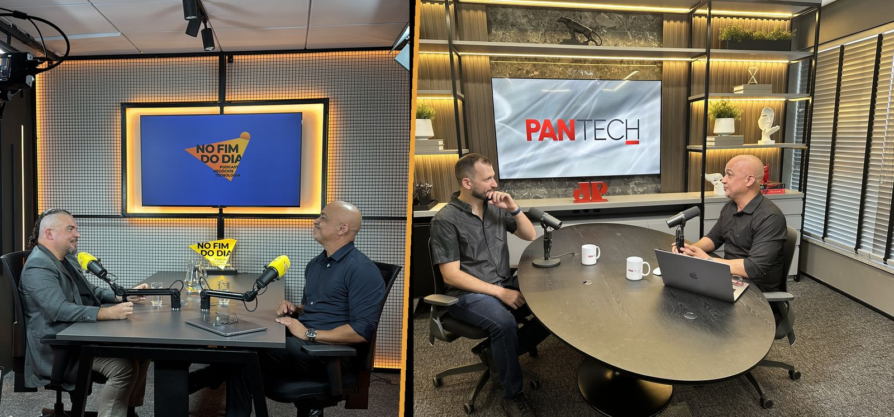
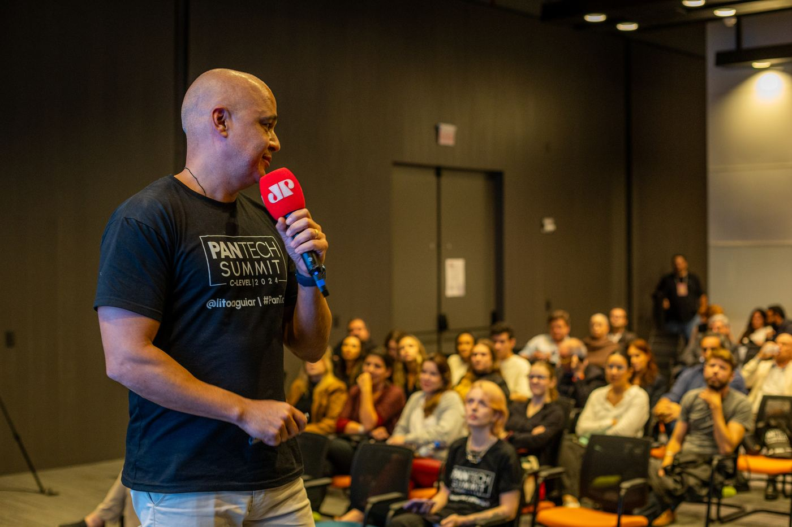
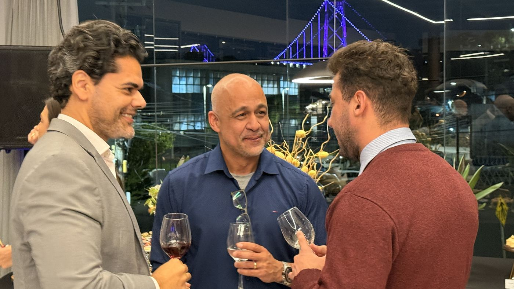
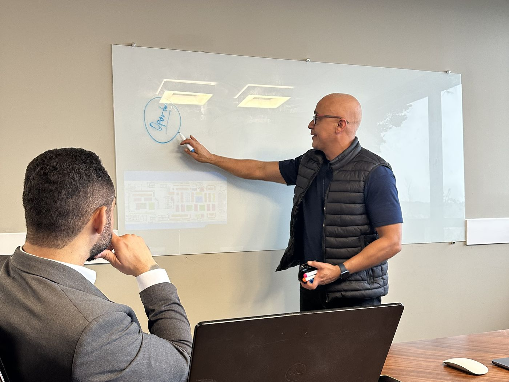
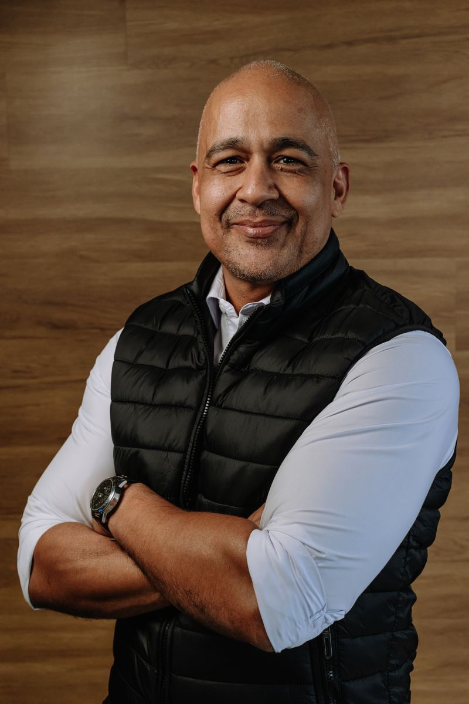
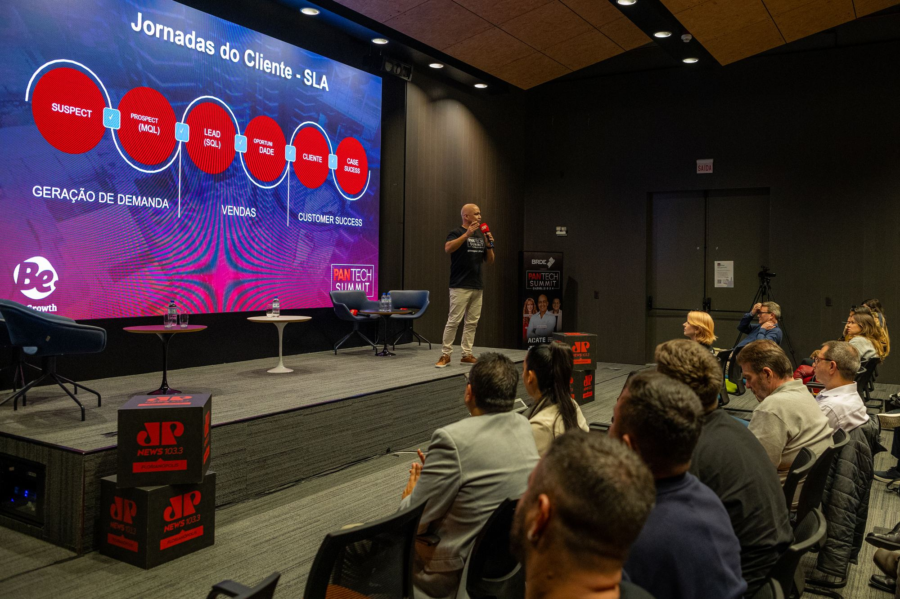

Mentoria Fluxo de AutoridadeOs textos mais recentes de Lito Aguiar em cada portal.

Há três anos, gravei meu primeiro podcast com um sofá debaixo de uma árvore, no fundo de quintal. Não aconteceu nada.
Depois veio o convite da Jovem Pan. Criei o Pantech, podcast de tecnologia e inovação. Passamos de 100 mil visualizações em menos de seis meses e fomos para a rádio, com mais de 7 mil ouvintes por minuto. Vieram convites para eventos, congressos e reuniões.
Aí minha esposa, que também é a gestora financeira das minhas empresas, me disse:
“Não me importa se você aparece na rádio, na TV ou no jornal. Se não mexer no fluxo de caixa, não serviu para nada.”
Doeu. E ela tinha razão.
Juntei 28 anos de marketing e vendas e transformei o podcast numa máquina de vendas: quem senta na cadeira para gravar é recebido, lido e conduzido até o contrato. Hoje apresento o No Fim do Dia, no portal ND+ do Grupo ND, afiliado à Record em Santa Catarina. O método é o mesmo.
Sua empresa fatura bem, mas depende da sua indicação e da sua rede pessoal para vender.
Você vê concorrentes menores aparecendo mais, e sendo chamados primeiro.
Já tentou conteúdo, mídia ou assessoria, e gerou curtida, não reunião.
Nas mesas de negociação, sente que poderia conduzir melhor, mas não sabe exatamente o que muda.
O seu CPF pode gerar demanda para o seu CNPJ. Falta transformar o que você já sabe em autoridade que vende.
Autoridade que vira fluxo de caixa, em três etapas.

01 · MESES 1 E 2Definimos a sua tese de founder, os canais que importam para o seu comprador e um ativo de conteúdo próprio. Você para de postar e passa a ser lembrado.

02 · MESES 3 E 4A habilidade que mais impressiona nas minhas mesas de reunião, e a que quase ninguém ensina: ler a pessoa à sua frente. Nervosismo, receio, ansiedade, interesse real. Você aprende a identificar e a conduzir a conversa a partir disso.

03 · MESES 5 E 6Transformamos as conversas de autoridade em pipeline: quem você convida, como conduz e como cada encontro vira proposta. É a etapa dos 62%.
Projetos conduzidos pelas minhas empresas. Os clientes não são identificados por confidencialidade.
Mapeamos o comportamento do público no site e nas mídias digitais e descobrimos que 82% dos compradores eram movidos a dados. Reescrevemos a comunicação para falar com esse perfil.
Os cooperados tinham crédito pré-aprovado para veículos e não usavam. Conectamos os dados do aplicativo à mídia: quem simulava o crédito via nas redes o carro que tinha escolhido.
Ao converter, o gerente de conta ligava na hora e oferecia um test drive com motorista na porta de casa. A venda fechava na concessionária.

Empresário há 28 anos, com cases em marketing e vendas no Brasil e no exterior. Criador e apresentador do Pantech, podcast de tecnologia e inovação da Jovem Pan, por dois anos. Hoje cria e apresenta o No Fim do Dia, no portal ND+ do Grupo ND, afiliado à Record, com 7 emissoras em Santa Catarina. Professor universitário e fundador de empresas de tecnologia, marketing, eventos e esporte.
Não. O podcast foi o meu canal. O método serve para qualquer formato que coloque você diante de quem decide: mídia, palco, eventos, conteúdo ou conversas estruturadas.
Os encontros, a cada 15 dias, e cerca de 3 horas por semana para executar o plano.
Os dois. Encontros online, e presenciais em Florianópolis para quem preferir.
Porque sou eu quem conduz cada encontro.
Você preenche a aplicação, e eu converso com você por 30 minutos. Se fizer sentido para os dois lados, enviamos a proposta.

A pergunta é se vai ser você ou o concorrente que aparece mais.